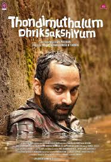
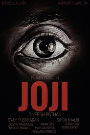

SPOTSTAR - DILEESH POTHAN
Dileesh Pothan is a renowned Malayalam film director, actor, and producer, known for his subtle and realistic approach to storytelling. Born in 1980 in Kottayam, Kerala, he completed his studies in theatre arts and began his film journey behind the camera as an assistant director. He worked with director Aashiq Abu on several films, which laid the foundation for his future in the industry. Dileesh made his directorial debut with the film Maheshinte Prathikaaram in 2016, which was both a critical and commercial success. His second film, Thondimuthalum Driksakshiyum, released in 2017, further established him as a powerful storyteller in Indian cinema. In 2021, he directed Joji, a crime drama inspired by Shakespeare's Macbeth, which gained international recognition. Known for his minimalist direction and character-driven narratives, Dileesh often collaborates with writer Syam Pushkaran and actor Fahadh Faasil. He co-founded the production house Working Class Hero, which has backed acclaimed films like Kumbalangi Nights. Apart from directing, he has also appeared in numerous Malayalam films in supporting roles. His work is praised for its authenticity, emotional depth, and quiet humor. He is married to Jimsy, and the couple has two children. Dileesh Pothan remains one of the most influential voices in new-generation Malayalam cinema.
POPULAR FILMS


